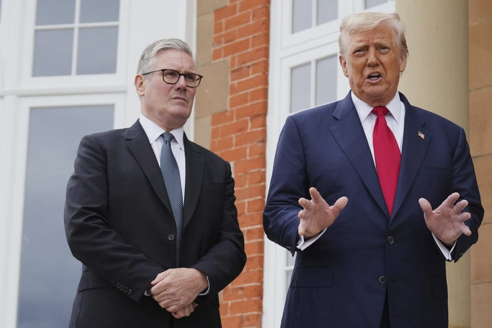

世界苦茶07月29日新闻 | 43条 | 河北暴雨造成重大伤亡

河北暴雨造成重大伤亡 | 中国实施育儿补贴 | 美国拒绝赖清德在纽约过境 | 法国批美欧贸易协议不公 | 特朗普称将缩短对俄最后通牒 | 美英施压以色列 | 叙利亚将首次举行议会选举
每日三條新聞解析
苦茶数据
美元兑人民币：7.17（昨日7.16，前日7.16）
美元兑日元：148.37（昨日147.98，前日147.72）
上证指数：3593（昨日3602，前日3593）
标普500指数：6398（昨日6388，前日6363）
比特币：1179717（昨日119162，前日118319）
布伦特原油：70.07（昨日68.69，前日68.44）
中国新闻
• 华北强降雨引发灾情 ：中国华北地区7月下旬以来的强降雨持续，北京、河北局地出现特大暴雨，引发洪水和山体滑坡。中国总理李强星期一透露，北京密云暴雨洪涝灾害造成重大人员伤亡。综合新华社、央视新闻等报道，李强要求国家防总指导相关地方进一步强化防范应对，做好极端天气监测预警，加强江河、水库堤坝巡护查险和城市内涝隐患排查，及时转移涉险群众，切实保障民众生命财产安全。中国国家主席习近平星期一则要求各地区各部门做好防汛抢险救灾各项工作，全力搜救失联被困人员，果断转移安置受威胁群众，最大限度减少人员伤亡。
• 北京暴雨致30人死亡 ：北京本轮强降雨已造成至少30人死亡，其中密云28人、延庆2人。全市累计转移80332人。受灾地区道路损毁31处，涉及兴阳线、西火路等16条线路仍未修通；136个村电力中断，通信设施共损毁光缆62条、基站退服1825个。截至28日24时，全市平均降水量165.9毫米，最大降水量在密云郎房峪和朱家峪，达到543.4毫米；最大降水强度出现在怀柔东峪，26日22时-26日23时降水95.3毫米。
• 习近平指示全力防灾 ：包括中国首都北京在内的多地持续遭遇强降雨，引发洪涝和地质灾害，造成重大人员伤亡。中国国家主席习近平指示全力搜救失联被困人员，最大限度减少人员伤亡。据新华社报道，习近平星期一对防汛救灾工作作出重要指示时说，华东、华北、东北等地持续遭遇强降雨，引发洪涝和地质灾害，造成北京、河北、吉林、山东等地重大人员伤亡和财产损失。他指出，要扎实做好防汛抢险救灾各项工作，全力搜救失联被困人员，果断转移安置受威胁群众，最大限度减少人员伤亡。
• 中国实施育儿补贴 ：中国官方星期一公布国家育儿补贴制度实施方案，从2025年1月1日起，每孩每年发放育儿补贴3600元人民币，直至年满三周岁。据新华社消息，根据中共中央办公厅、国务院办公厅印发的《育儿补贴制度实施方案》，补贴对象为从2025年1月1日起，符合法律法规规定生育的三周岁以下婴幼儿。即无论一孩、二孩、三孩，均可申领育儿补贴。2025年1月1日前出生、不满三周岁的婴幼儿，也可享受政策，按应补贴月数折算计发补贴。
• 中国查处主播逃税超30亿 ：中国官方披露，税务部门自2021年以来，查处了360多起网络主播偷逃税案，共查补税款超过30亿元人民币。中国国务院新闻办公室星期一举行“高质量完成‘十四五’规划”系列主题新闻发布会。国家税务总局局长胡静林、副局长王道树等在会上介绍“十四五”时期税收改革与发展有关情况。胡静林介绍，税务部门在“十四五”期间累计征收的税费收入预计将超过155万亿元，占全口径财政收入的80%左右。
• 电话卡20张以上属情节严重 ：中国星期一发布关于办理帮助信息网络犯罪活动等刑事案件有关问题的意见，决定做出调整，提出只要收购、出售、出租电话卡20张以上，即认定属于“情节严重”情形。综合中新社和红星新闻报道，上述意见由中国最高人民法院、最高人民检察院、公安部联合发布，旨在进一步严密刑事法网，加大刑事追诉力度，瓦解电信网络诈骗等犯罪的生存根基。这份意见共16条，就依法认定帮信犯罪、坚持综合治理等问题进行规定，其中明确帮信罪的主观明知认定规则，涉“两卡”帮信罪的“情节严重”认定标准，以及帮信罪与掩隐罪、诈骗罪等关联犯罪共犯的区分规则。
• 王毅吁韩对华政策稳定 ：中国外长王毅同韩国新任外长赵显通话时说，中韩要做名副其实的战略合作伙伴，并呼吁韩国对华政策做到稳定、可预期，避免摇摆。据新华社报道，王毅星期一应约与赵显通电话时说，中韩要做名副其实的战略合作伙伴，推动两国关系向更高水平迈进。王毅说，双方首先要保持政策稳定性，中方始终重视发展中韩合作，对韩政策保持连续稳定，希望韩方对华政策同样做到稳定、可持续、可预期，避免摇摆。
• 三大居企创始人均遭留置 ：居然智家董事长汪林朋7月27日坠楼身亡。居然智家28日晚公告证实死讯。汪林朋4月17日被武汉市江汉区监察委员会立案调查而遭留置，7月23日被解除留置措施，恢复履职，但需随时配合调查。除汪林朋外，美凯龙创始人车建兴5月被云南省监察委员会立案调查并实施留置，7月18日辞任总经理但担任执行董事；富森美董事长刘兵7月被留置。至此，三大上市家居公司创始人均被留置。留置原因尚不清楚。有家居行业内人士表示，不排除因为卖场涉及房地产行业而引发的风险问题。此外，旗下有近百家直营门店的华南地区知名整装公司靓家居7月下旬宣布停业。靓家居创始人曾育周已于7月17日凌晨坠亡。网传《停业通知》称，靓家居相关公司受房地产行业影响，长期亏损，现已资不抵债，无力继续经营。
• 释永信被注销戒牒 ：中国佛教协会公告，少林寺住持释永信所作所为败坏佛教界声誉，损害出家人形象，因此同意注销他的戒牒。中国佛教协会星期一在官网公告，少林寺管理处星期天发布情况通报，指少林寺住持释永信涉嫌刑事犯罪，挪用侵占项目资金寺院资产；长期与多名女性保持不正当关系并育有私生子，严重违反佛教戒律。目前正在接受多部门联合调查。公告指出，释永信的所作所为性质十分恶劣，严重败坏了佛教界的声誉，损害了出家人的形象，中国佛教协会坚决拥护和支持对释永信的依法处理决定。佛教协会日前收到河南省佛教协会报来《关于注销释永信戒牒的报告》。根据有关规定，协会同意对释永信，俗名刘应成的戒牒予以注销。
• 山西客车遇险多人失联 ：中国山西省多地强降雨引发山洪预警，大同市一辆客车遇险，目前一人已证实遇难，仍有13人失联，搜救工作仍在进行中。综合中国新闻社和山西日报消息，大同市“7·27”抢险救援指挥部星期天晚通报称，当天凌晨，一辆福特全顺牌中型普通客车在大同市天镇县谷前堡镇一畔庄村附近，行驶过程中遇险失联，导致14人失联。同日下午1时43分，搜救人员在事发地点下游地区发现一具遗体，经确认是失联人员之一。
• 津巴布韦中企遭抢致中方死亡 ：非洲国家津巴布韦一家中资企业遭持枪抢劫，一名中国人中枪身亡，中国大使馆提醒当地中国企业和公民加强安全防范，有条件的应雇佣专业保安。中国驻津巴布韦大使馆星期天晚间在官网发布提醒，称津巴布韦中部省一家中资矿企近日遭到持枪抢劫，一名中国公民被劫匪开枪击伤，经抢救无效身亡。使馆获悉后马上组织援津医疗队协助救治，并敦促警方加大侦破力度，尽快缉拿凶犯，同时采取措施保护中国企业机构和公民安全。
• 广东报告4800余登革热病例 ：中国广东省疾病预防控制中心星期天通报，今年全省累计报告4824例基孔肯雅热本地病例。广东疾控局在微信公众号公布，截至7月26日，过去七天全省新增报告2940例基孔肯雅热本地病例，未报告重症和死亡病例。病例分布在佛山2882例，广州22例，中山18例，东莞、珠海、河源各三例，江门、阳江、肇庆各两例，清远、深圳、湛江各一例。今年全省累计报告4824例基孔肯雅热本地病例，均为轻症，无重症和死亡病例报告。目前，已治愈出院和解除医学观察3224例。
亚太印太新闻
• 据报道，中国介入后，美国阻止台湾总统在纽约过境： 特朗普政府做出这一决定正值美国与中国进行敏感贸易谈判之际。北京反对美国与台湾领导人进行任何官方接触。美国立法的背景下，这种复杂的态势更加凸显，例如《台湾关系法》。该法指导着美国对台湾安全的承诺，并支撑着非官方的商业关系。与此同时，在特朗普反复发出关税威胁以及双方在知识产权、市场准入等问题上产生分歧的背景下，华盛顿与中国的贸易关系经历了数月的动荡。据《金融时报》报道，台湾总统赖清德原计划于8月在前往巴拉圭、危地马拉和伯利兹的途中在纽约过境，这三个国家都承认台湾独立。路透社此前也报道称，赖清德曾考虑在前往拉丁美洲的途中在纽约和达拉斯过境。但据《金融时报》援引三位消息人士的话说，美国告知赖清德他无法访问纽约。赖清德办公室周一发表声明称，赖清德目前没有出国旅行计划，因为他正专注于与美国正在进行的贸易谈判以及台湾的台风灾后重建工作。
• 金与正表示不会弃核 ：朝鲜劳动党中央委员会副部长金与正不否认朝鲜领导人金正恩和美国总统特朗普的关系“不错”，但她也提醒美国必须接受新的现实，双方的任何未来对话都不会终结朝鲜核计划。路透社引述朝中社星期二报道称，为金正恩胞妹的金与正在一份声明中承认金正恩和特朗普的私人关系“还不错”，但若华盛顿试图利用私人关系来终结朝鲜核武器计划，那只会“沦为笑柄”。据信能代表金正恩发言的金与正说：“如果美国不接受已经改变的现实，仍然执迷于失败的过去，朝美会谈只能是美国单方面的一个‘希望’。”
• 特朗普仍愿对话朝鲜 ：美国白宫说，总统特朗普仍然致力于彻底终结朝鲜核武计划，并对与朝鲜领导人金正恩对话持开放态度。朝中社星期二报道，为朝鲜领导人金正恩胞妹的金与正在一份声明中承认，金正恩和特朗普的私人关系“还不错”，但若华盛顿试图利用私人关系来终结朝鲜核武器计划，那只会“沦为笑柄”。据信能代表金正恩发言的金与正，是朝鲜劳动党中央委员会副部长。
• 韩回应金与正谈话 ：韩国总统办公室对朝鲜劳动党中央委员会副部长金与正的谈话作出回应，称韩国将继续为实现朝鲜半岛永久性和平而进行努力。韩联社报道，韩国总统室星期一表示注意到朝鲜高官就李在明政府成立后首次发表的立场，并发现因过去几年不断实施的敌对、对抗政策，韩朝之间的互不信任根深蒂固。总统室强调，让和平永久扎根半岛是李在明政府坚定的施政理念，政府将始终如一地采取相关行动，致力于建设不敌对、不生战的韩半岛。同日，韩国统一部发言人具炳杉在中央政府首尔办公楼的记者会说，政府不会被朝方的表态所扰，将坚定不移地推动韩朝建立和解与合作关系、韩朝和平共处。具炳杉说，金与正的谈话正是朝方密切关注韩方对朝政策的旁证，谈话内容并无特别敌对或抹黑韩方的表述。
• 韩国前议员涉案身亡 ：因牵涉韩国前总统尹锡悦夫妇介入国民力量党内公荐案，正在接受检方调查的前京畿道议会议员崔虎被发现身亡。所谓公荐是指韩国政党推荐公职选举候选人。韩联社报道，据京畿道平泽警察署消息，警方星期一凌晨3时许在平泽市芝山洞的一座山上发现崔虎死亡。崔虎的家属于当天凌晨2时许向警方报案，称崔虎失踪。警方认为崔虎于星期天下午5时左右离家后自尽，现场未发现遗书。警方表示，因调查正在进行，不宜透露案件详情。
• 赖清德“十讲”持续进行 ：被认为给大罢免“帮倒忙”的台湾总统赖清德“团结国家十讲”，据报仍会持续进行。国民党立委批评，这代表赖清德将继续大罢免行动，“心中只有选举，没有治国”。据《中国时报》报道，台湾中央选举委员会6月20日公布首轮大罢免投票时间后，台湾总统府随即在隔天宣布赖清德启动“团结国家十讲”，针对不同主题说明台湾面临的挑战及政府因应政策。不过，赖清德的“十讲”演说才进行前四讲就已争议不断，“杂质说”和被质疑错用史料等争议，都被外界认为在为罢免“帮倒忙”。在完成前四讲后，原订7月在高雄和花莲发表的两次演讲，都因为台风而取消。
• 台湾普发现金引发争议 ：台湾立法院7月11日通过向民众普发1万新台币，应对美国关税战所带来的冲击。台行政院必须最迟在星期四就这一特别拨款条例提出复议。综合台湾《中国时报》和ETtoday新闻云等报道，台湾行政院明确表态不支持向全民普发现金1万元新台币，被视为这次大罢免失败的关键因素之一。尽管行政院长卓荣泰曾公开表示，希望能赴立法院亲自说明台湾财政状况，但至今未明确交代是否提出替代性救济措施。根据宪法规定，行政院对此案提出复议的最后期限为7月31日。
• 柬泰边境冲突将谈判 ：马来西亚官员称，柬埔寨和泰国领导人已经于星期一抵达马国，就边境冲突停火举行会谈。路透社报道，这名官员指出，美国和中国驻马国大使也出席了在布城举行的会谈。会谈在马国首相安华的官邸举行。泰国和柬埔寨的边境冲突已持续五天。两国均指责对方上周先挑起冲突，在陆地边界沿线多个地点发动猛烈炮击。
• 曼谷市场枪击案致六死 ：泰国曼谷Or Tor Kor生鲜市场星期一发生大规模枪击案，造成至少六人死亡，其中一名死者为枪手。这个深受游客欢迎的生鲜市场非常靠近另一热门周末市集乍都乍。路透社报道，曼谷警察总局副局长查林说，枪手自轰身亡。
• 马来西亚拟全面禁电子烟 ：马来西亚考虑在全国范围内禁止电子烟的使用和销售。《星报》报道，马来西亚卫生部长祖基菲里阿末星期一在议会召开新闻发布会说，为应对滥用电子烟的问题，卫生部的一个特别委员会将提议全面禁止电子烟。他说：“我们将采取提案形式，卫生部将把禁止电子烟的议程提交上去。”
• 日本自民党评估选举失败 ：日本执政自民党星期一下午3时30分召开全体会议，评估自民党近期选举失利的原因，这将为党内寻求更换领导层的成员提供一个直接挑战首相石破茂的机会。石破星期天再次表明打算继续留任，希望确保最近宣布的美日贸易协议能够成功实施。《每日新闻》和《朝日新闻》星期天公布的民调均显示，石破茂领导的自民党与公明党执政联盟的支持率为29%。
• 台采购M1A2T坦克再抵台 ：时隔半年，台湾向美国采购的第二批42辆M1A2T坦克已抵台。综合台湾《联合报》和ETtoday新闻云等报道，台湾陆军向美国采购的第二批42辆M1A2T坦克，星期天晚间由国安轮运抵台北港，星期一凌晨约零时10分由民间大型拖板车机动运出港区，转运至位于新竹湖口的装甲兵训练指挥部，整个过程由警方与宪兵协助交通管制。截至目前，台湾已有80辆M1A2T坦克。首批38辆M1A2T坦克去年12月15日运抵台北港。今年7月10日汉光演习第二天，M1A2T坦克在新竹坑子口训场实施120公里坦克炮实弹射击，总统赖清德率国防部长顾立雄、国安会秘书长吴钊燮等人亲临视导。
科技新闻
• 联合国吁制定全球AI规则 ：联合国首席科技官员警告，世界迫切需要制定一套管控人工智能的全球性统一方案，各自为政将加剧风险和不平等局面。联合国国际电信联盟负责人博格丹－马丁接受法新社访问时说，她希望AI“能够真正造福人类”。博格丹－马丁所指的AI日新月异带来的风险包括人类的工作被机器人取代、深伪科技和假信息加速传播，以及社会结构更加分裂。 （翻评：基本不可能，未来的发展方向一定是主权云和主权AI。）
财经新闻
• 特朗普将加征全球关税 ：美国总统特朗普说，大多数未与美国进行单独谈判的贸易伙伴，它们的对美出口商品即将面临15%至20%的关税，这远高于他在4月份实施的10%基准关税。路透社报道，特朗普星期一在他位于苏格兰特恩贝里的豪华高尔夫度假村，与英国首相斯塔默并排而坐时告诉记者，约200个国家将很快接到新的“全球关税”税率。特朗普说：“大概在15%到20%，可能是这两个数字中的一个。”
• 韩美贸易谈判最后攻防 ：距离8月1日美国启动“对等关税”仅剩几天，韩美贸易谈判进入最后攻防阶段。韩国正加紧筹措包括扩大农畜产品进口、强化两地制造业合作、加大对美投资等多项谈判筹码，力求在最后期限前达成协议，避免两国贸易冲突升级。据悉，韩国副总理兼企划财政部长具允哲将于7月31日与美国财政部长贝森特举行一对一闭门会谈，韩国谈判小组正就可行性最高的方案进行最终梳理。韩国总统府星期一透露，韩方正在努力“将农畜产品让步幅度降至最低”，尽力守住国内关键产业防线。本轮协商的焦点之一，是韩方提出的大型造船合作项目MASGA。该项目名称融合美国总统特朗普的政治口号MAGA与造船，旨在通过韩方的世界领先造船技术，协助美国重建本土船舶产业，实现制造业回流与强化国家安全的双重目标。
• 法国批美欧贸易协议不公 ：法国称美欧框架贸易协议对欧洲来说是“黑暗的一天”，指欧盟向特朗普屈服，签署了一项不平衡的协议。路透社报道，根据协议，美国将对欧盟商品征收15%的关税，同时美国进口商品不会立即遭到欧洲的报复。此前数月，法国总理贝鲁一直呼吁欧盟谈判代表对特朗普采取更强硬的立场，威胁采取对等措施。
• 中美新一轮经贸谈判开启 ：中美最新一轮经贸谈判将于瑞典斯德哥尔摩当地时间星期一下午举行。路透社引述参与筹划这次谈判的知情人士报道，中美经贸高官将于瑞典首都斯德哥尔摩当地时间星期一下午在瑞典政府罗森巴德大楼内举行。针对中国将在这场经贸谈判中持怎样的立场，中国外交部发言人郭嘉昆星期一在例行记者会上指出，中方在经贸问题上的立场是一贯明确的，希望美方同中方一道，落实两国元首通话达成的重要共识，发挥中美经贸磋商机制的作用。
• 台美谈判受日美协议影响 ：台湾媒体报道，台湾政府在美国关税方面的目标是至少争取不高于日本、韩国，但针对日本的税率已揭晓为15%，对台美谈判形成压力。美国和日本早前经历八轮谈判后达成贸易协议，美国将日本商品的对等关税和汽车关税都从25%降低至15%，日本则会进口更多美国汽车、卡车和大米等农产品，并承诺对美国关键领域如药剂和半导体业作出高达5500亿美元投资。台湾《联合报》引述消息人士报道，针对日本的税率已揭晓为15%，低于先前预期，对台美谈判形成压力。
• 比亚迪转移会议至海外 ：尽管在印度扩展计划受当地政府阻碍，中国电动车巨企比亚迪仍努力推进相关投资。据彭博社星期一报道，在2020年中印士兵在存在主权争议的喜马拉雅边境发生致命冲突，导致两国关系陷入低谷后，许多中国企业高级管理人员都无法获得印度批出签证，比亚迪也不例外。知情人士透露，上述情况促使比亚迪将董事会会议和高层业务交流活动安排在斯里兰卡科伦坡、尼泊尔加德满都，甚至远在新加坡举行。
• 李嘉诚集团邀陆资洽港口交易 ：香港首富李嘉诚旗下的长江和记集团星期一确认，出售巴拿马港口的独家磋商期已届满，接下来拟邀请中国大陆投资者加入买方。长和集团星期一在官网发文宣布上述消息，并称尽管磋商期限已届满，集团仍在与财团成员进行讨论，拟邀请来自中国大陆的主要策略投资者加入，成为财团的重要成员。文告也提到，为使交易能够获得所有相关监管机构和部门的批准，财团的成员以及交易架构将更改。因此，长和集团打算预留充分的时间进行相关讨论，以达成新安排。
俄乌战争
• 普京或9月与特朗普会晤 ：克里姆林宫星期一说，不排除俄罗斯总统普京与美国总统特朗普9月在中国举行会晤的可能性。法新社报道，普京将于9月初访华，出席二战结束80周年纪念活动。克宫发言人佩斯科夫在新闻发布会上告诉记者：“如果美国总统最终决定在这段时间访华，那么理论上当然不能排除这样的会晤。”
• 特朗普缩短俄乌停火期限 ：美国总统特朗普星期一说，他将缩短此前给予俄罗斯的50天期限，重新设定为“10至12天”，以结束俄乌战争。路透社报道，特朗普在与英国首相斯塔默于苏格兰会晤时告诉记者：“我将从今天起设定一个新的最后期限，大约10到12天。没有理由等待，我们只是没有看到任何进展。”他在会晤前说：“我对普京总统感到失望。我将缩短我给予他的50天期限，因为我认为我已经知道会发生什么。”
• 黑客攻击致俄航班大规模取消 ：俄罗斯航空公司星期一因信息系统出现故障，取消了数十个航班。一个神秘的黑客组织声称对此次网络攻击负责。路透社报道，一份来自名为“Silent Crow”的黑客组织的声明称，该组织与白罗斯一个名为“Cyberpartisans BY”的组织共同策划了此次行动。声明说：“荣耀属于乌克兰！白罗斯万岁！”此前，“Silent Crow”组织声称对1月份针对俄罗斯房地产数据库的攻击负责。俄罗斯航空公司表示，在报告其信息系统故障后，已取消了40多个航班。“专家正在努力将影响降至最低，并恢复正常的服务运营。”
• 中方回应乌对中企制裁 ：乌克兰总统泽连斯基批准对援助俄罗斯的中国实体实施制裁，中国外交部对此回应时称，中方敦促乌克兰纠正错误，消除负面影响。中国外交部发言人郭嘉昆星期一在例行记者会上应询时说，中方一贯反对没有国际法依据、未经联合国安理会授权的单边制裁。他称，中方敦促乌方立即纠正错误，消除负面影响。中方将坚决维护中国企业的正当合法权益。
• 乌无人机获美AI导引支持 ：美国国防公司 Auterion 将为乌克兰无人机提供 33,000套人工智能制导套件，资金来自五角大楼一份价值5000万美元的合同，该公司周一表示。据该公司称，这些套件使手动操控的攻击无人机能够自主跟踪并打击一公里外的目标。基辅表示将在2025年购买 450万架小型第一人称视角无人机，并一直在寻找方法使这些无人机免受乌克兰和俄罗斯部署的日益密集的信号干扰。使用人工智能在无人机飞行的最后阶段锁定目标形状的无人机是正在部署的几种解决方案之一。一位乌克兰官员去年表示，乌克兰拥有数十种用于无人机制导的人工智能增强系统。
• 俄禁汽油出口稳内需 ：当地时间周一，俄罗斯政府宣布，即日起至八月底全面禁止汽油出口，以应对国内需求不断增加的情况。此前，乌克兰无人机袭击叠加西方制裁，导致炼油厂季节性维护计划被打乱，国内供需出现阶段性失衡。俄罗斯政府发文称：“这一决定是为了在季节性需求旺盛及农场生产高峰期间，保持国内燃料市场的稳定。”尽管出台了汽油出口禁令，但预计将对全球成品油市场的影响有限。数据显示，俄罗斯日均汽油出口量约为10万桶，还不到全球海运燃料贸易的2%。此外，俄政府此前已叫停非生产商的汽油出口。此次禁令将出口范围进一步扩大至所有企业。
国际新闻
• 特朗普宣布援助加沙 ：美国总统特朗普说，美国将在加沙设立粮食中心，以协助缓解加沙饥荒问题。特朗普星期一在苏格兰会见英国首相斯塔默后告诉记者：“我们将设立粮食中心，人们可以自由进出——没有边界。我们不会设置围栏。”当被问及他是否同意以色列总理内坦亚胡关于加沙没有饥荒的说法时，特朗普说：“我不知道。我的意思是，根据电视上的报道，我会说不同意，因为那些孩子看起来非常饥饿。”
• 美英呼吁加沙停火 ：英国首相斯塔默与美国总统特朗普呼吁立即在加沙地带实现停火，采取紧急行动结束当地民众的苦难。新华社报道，英国政府网站星期一发布消息说，斯塔默与特朗普当天在英国苏格兰南艾尔郡举行会晤。双方一开始就讨论了加沙地带“令人震惊”的情况，并一致认为需要采取紧急行动结束这场苦难。双方也再次呼吁立即停火，为和平铺平道路，同时强调必须允许人道援助“大规模和快速”进入加沙地带。在双方会晤前，特朗普被现场记者问及是否同意以色列总理内坦亚胡“加沙地带不存在饥荒”的表态，他说：“根据电视画面来看，我不太同意，因为那些孩子看起来非常饥饿。”
• 特朗普警告伊朗勿重启核计划 ：美国总统特朗普星期一警告称，如果德黑兰试图重启上月遭到美国轰炸的伊朗核设施，他将下令对伊朗核设施发动新的打击。路透社报道，特朗普在苏格兰与英国首相斯塔默举行会谈时发出这一威胁。伊朗否认寻求发展核武器，并坚称尽管伊朗三处核设施遭到轰炸，但不会放弃国内铀浓缩活动。
• 叙将举行首次议会选举 ：叙利亚过渡政府计划在9月举行首次议会选举。路透社报道，叙利亚选举委员会主席塔哈星期天告诉国家通讯社SANA，人民议会选举将在9月15日至20日期间举行，以选举210名议员。叙利亚过渡总统沙拉已收到选举法草案，草案修订了之前的一项法令，将人民议会的席位数目从150席增加到210席，其中三分之一席位将由总统任命。
• 伦敦持刀案致两死两伤 ：英国伦敦萨瑟克地区的一家商业场所7月28日发生持刀伤人事件，造成2人死亡、2人受伤。其中一名伤者为嫌疑人，目前生命垂危。警方称正在对这起案件进行调查，初步认定此案与恐怖袭击无关。